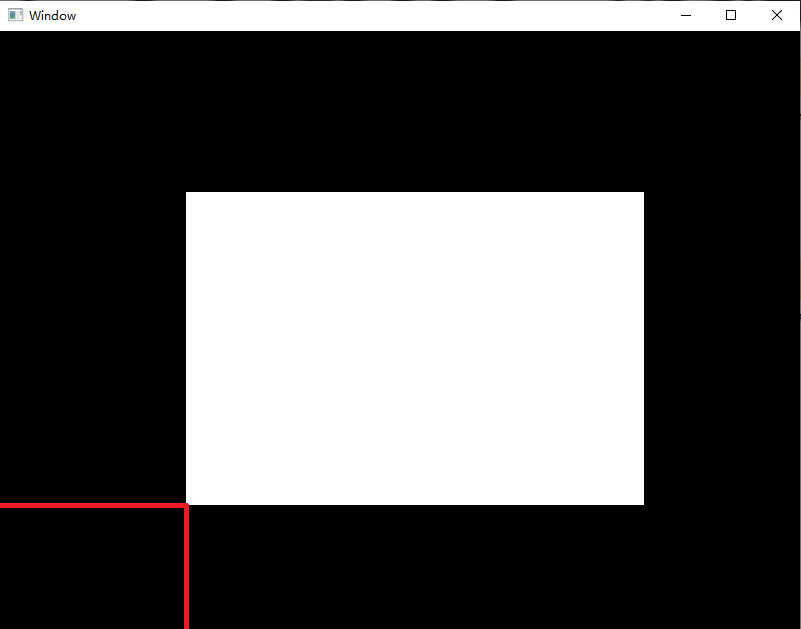

1.1 创建窗口+初始化
观前提示：从这课开始，最后都会有总结。如果你不理解某些内容，可以看一下总结。
初始化
为了方便调用，我们将一些很常用的函数封装到了一个类 gl_t 中。
这让你只需要调用很简单的函数就能完成任务！
我们可以通过以下代码进行其声明和初始化。
警告
只能声明一个这种对象且这要放在所有其他对象的前面。
gl_t gl(bool _use_v3_3,int _ww,int _wh,const char* _wtitle);
第一个参数：_use_v3_3
：
为1时要求使用 OpenGL 3.3 核心模式，可能不兼容老旧显卡；为0时使用默认配置。
第二、三、四个参数：_ww, _wh, _wtitle
：
窗口的宽、高、标题（注意编码）。
视口设置
我们应该定义OpenGL渲染窗口（视口）的尺寸大小和位置。
回调函数
在OpenGL中，使用
回调函数的形式进行各种控制。这种函数会在执行对应操作时被自动调用。
例如，当我们改变窗口大小时，就会调用
framebuffer_size_callback。这使得我们可以同步改变视口大小。
这可以在主文件中定义，也可以在另一个文件中定义。但是函数名要相同。在本教程中，将在 header 路径下的 sto.h 中定义。
sto.h 为代码模板。
注意，在实际制作项目时，通常采用类似 mod.cpp 的结构。input() 函数用于检测输入。
framebuffer_size_callback(GLFWwindow* _win, int _w, int _h)
每当刚开始时或者窗口大小改变时，该函数会被调用。这时 _w 为调整后的宽， _h 为调整后的高。
我们可以在这个函数中调用以下函数来设置视口：
glViewport(lbX, lbY, vpW, vpH);
其中，lbX,lbY 为视口左下角的位置，vpW,vpH为视口的宽度和高度（单位：像素）。
此外，还要调用以下函数来设置窗口大小：
gl.set_win(_w,_h);
其中，gl 是你定义的 gl_t 实例。这行代码不要修改。
图解

图中视口即白色长方形，渲染出的图形都会在其中显示，外围可以用于显示额外内容。
视口左下角的坐标即红色所示，在这里原点为窗口左下角。
注意
2D坐标横轴为x，纵轴为y。
区分
注意区分窗口与视口的区别：如图所示，这一整张图是窗口，白色的长方形是视口。
例1.
创建一个与窗口一样大的视口。
void framebuffer_size_callback(GLFWwindow* _win, int _w, int _h){
glViewport(0,0,_w,_h); // 视口左下角正好位于窗口左下角，视口与窗口大小相同
gl.set_win(_w,_h); // 一定要加上这句
}
这段代码会很常用，之后的所有代码，用的都是这一段。
练习1.
创建一个位于窗口中间、宽高为窗口一半的视口。（只写回调函数）
答案 ex1
渲染循环
我们不希望程序在渲染完一个图形之后立即退出，所以就要把渲染代码放在一个循环里。
但为了简化，你可以调用以下函数：
gl.main_loop();
然后定义一个 show() 函数，并在函数内实现以下内容：
- 输入控制；
- 清屏指令；
- 渲染指令；
内置的循环会每帧调用一次这个函数。
开始之前
在开始介绍三种内容之前，我们先试着写一个可以运行并显示一个空窗口的代码。
练习2.
如上，创建一个标题为 Learn OpenGL ，宽 800px，高 600px 的空窗口。
如果你不会，请不要担心，把这些东西组合起来确实比较困难。正确答案 ex2 。无论是本次的代码，还是之后的，都要复制到你的对应目录下运行。
输入控制
在此处先介绍键盘控制。
我们可以通过调用以下函数来获取按键状态。
gl.kpr(/*按键常量*/);
其中，按键常量是以下常量表中的一个。
常量表
当 按键常量对应的按键 在调用时被按下，这个函数返回 1 ，否则返回 0 。
这时我们可以调用以下函数来关闭窗口： gl.close_win();
清屏指令
为了不保留上一帧的画面，我们在每次渲染前要清屏。调用以下函数(任一均可)：
gl.clr_col(float _r,float _g,float _b,float _a);
gl.clr_rgb(unsigned int _rgb);
gl.clr_rgba(unsigned int _rgba);
其中，第一个函数接受4个小数（0~1之间），分别为 红色值、绿色值、蓝色值、不透明度。
第二个接受一个十六进制色号（不包含不透明度信息），如 0xff00ff。
第三个接受一个十六进制色号（包含不透明度信息），如 0xff00ffff。
例2.
在练习2的基础上，
窗口填充黄色（0xffff00）当
Esc 被按下时，关闭窗口。答案 eg2.cpp。
常见问题
编译时报错找不到 OpenGL.h
：
检查你的代码是否放入了正确的位置。
窗口弹出后立即关闭
：
确认你调用了 gl.main_loop();，并且 show() 函数内没有导致退出的代码。
窗口是黑色的，没有图形
：
检查着色器文件路径是否正确，或者先调用 gl.clr_rgb(0xff0000) 测试清屏颜色是否生效。
总结
gl_t 对象
只能声明一个这种对象且这要放在所有其他对象的前面。
构造函数/声明
：
gl_t gl(bool _use_v3_3,int _ww,int _wh,const char* _wtitle);
设置窗口大小
：
只能在 framebuffer_size_callback 回调函数中以固定的参数调用一次：
gl.set_win(_w,_h);
调用主循环
：
gl.main_loop();
之后自行定义函数 show()，放入渲染代码，每帧自动调用。
渲染代码包含：
1. 输入控制；
2. 清屏指令；
3. 渲染指令；
获取按键状态(是否按下)
：
bool gl.kpr(/*按键常量*/)
常量表
清屏
：
gl.clr_col(float _r,float _g,float _b,float _a);
gl.clr_rgb(unsigned int _rgb);
gl.clr_rgba(unsigned int _rgba);
sto.h/回调函数
回调函数是一种作出对应操作后就会被自动调用的函数。
窗口大小被调整时调用：
framebuffer_size_callback(GLFWwindow* _win, int _w, int _h)
模版 sto.h ；常用 ex2/header/sto.h。
OpenGL 原生函数
设置视口
glViewport(lbX, lbY, vpW, vpH);
下一节